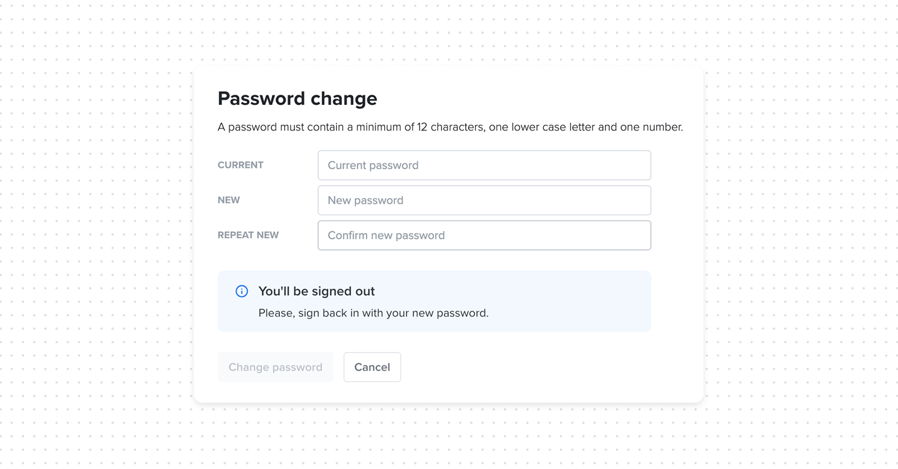
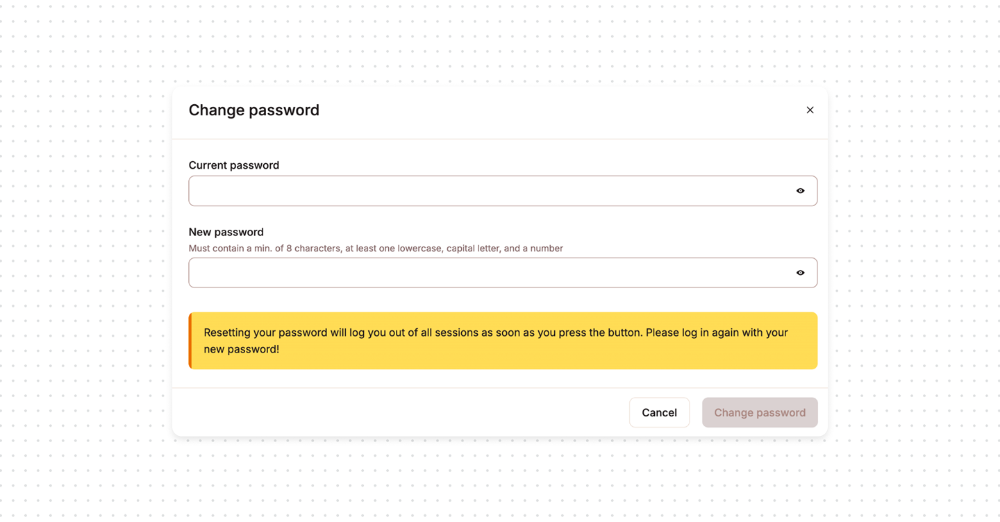
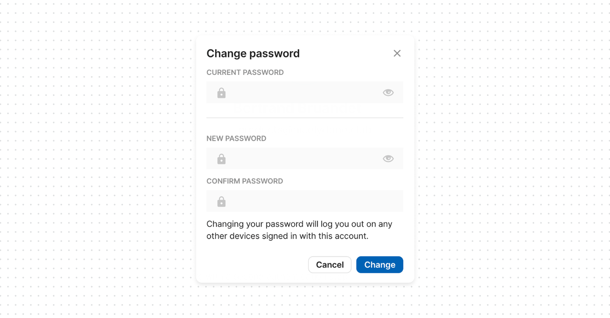
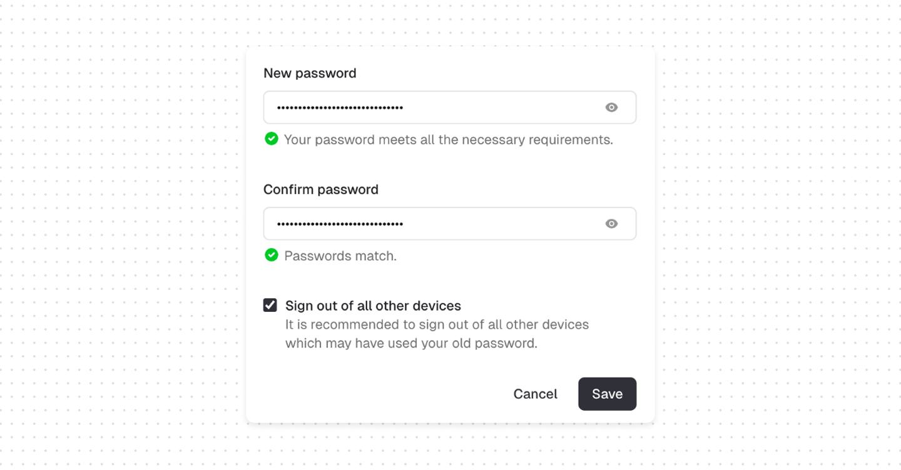

Password reset flows are missing one critical UX aspect

Most password reset flows focus entirely on the new password. But there’s a second decision happening in the background that many products completely fail to communicate: what happens to existing sessions. Does changing the password log everyone else out?
The hidden problem in password reset UX
Here’s the typical scenario. A user resets their password because they suspect suspicious activity. They change it successfully, see a confirmation message, and move on.
What they don’t know is whether:
- the attacker is still logged in on another device?
- their old sessions are still valid?
In many systems, the answer varies. Some log everyone out, while others do not. Some only invalidate sessions after a delay. Most importantly, many products do not communicate this clearly at the moment of action.
What good UX looks like
Always revoke sessions, and make it explicit: “Changing your password will sign you out of all other devices”. This is predictable and easy to reason about. No hidden behavior.
As alternative option, give users control. Add checkbox “Sign out of all other devices (recommended). This will immediately end all active sessions on your account”. This option should be checked by default, since most resets are security-driven.




Bottom line
If users don’t know whether existing sessions are still active, they can’t be confident they’ve actually regained control. Make session invalidation visible, explicit, and optionally user-controlled.
In real incident response scenarios, delayed session revocation is a known risk factor. Attackers with existing sessions can maintain access even after credential changes if session tokens are not explicitly invalidated.